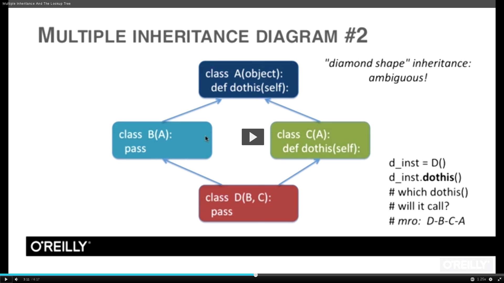

Created on 9th January 2016
---------------------------------
- Notes taken from the SafariBooksOnline course "PYTHON BEYOND THE BASICS - OBJECT ORIENTED PROGRAMMING".
1. Everything in Python is an object, even numbers.
An object is a unit of data (having one or more attributes), of a particular class or type, with associated functionality (methods).
1 mylist = ["a", "b", "c"]
2 mybool = True
3 mynone = None
4
5 def myfunc():
6 print("Hello")
7 print(myfunc)
2. Every object has multiple attributes, some common across objects, some common to the type of the object.
1 var = 5 2 In [6]: dir(var) 3 Out[6]: 4 ['__abs__', 5 '__add__', 6 '__and__', 7 '__bool__', 8 '__ceil__', 9 '__class__', 10 '__delattr__', 11 '__dir__', 12 '__divmod__', 13 '__doc__', 14 '__eq__', 15 '__float__', 16 '__floor__', 17 '__floordiv__', 18 '__format__', 19 '__ge__', 20 '__getattribute__', 21 '__getnewargs__', 22 '__gt__', 23 '__hash__', 24 '__index__', 25 '__init__', 26 '__int__', 27 '__invert__', 28 '__le__', 29 '__lshift__', 30 '__lt__', 31 '__mod__', 32 '__mul__', 33 '__ne__', 34 '__neg__', 35 '__new__', 36 '__or__', 37 '__pos__', 38 '__pow__', 39 '__radd__', 40 '__rand__', 41 '__rdivmod__', 42 '__reduce__', 43 '__reduce_ex__', 44 '__repr__', 45 '__rfloordiv__', 46 '__rlshift__', 47 '__rmod__', 48 '__rmul__', 49 '__ror__', 50 '__round__', 51 '__rpow__', 52 '__rrshift__', 53 '__rshift__', 54 '__rsub__', 55 '__rtruediv__', 56 '__rxor__', 57 '__setattr__', 58 '__sizeof__', 59 '__str__', 60 '__sub__', 61 '__subclasshook__', 62 '__truediv__', 63 '__trunc__', 64 '__xor__', 65 'bit_length', 66 'conjugate', 67 'denominator', 68 'from_bytes', 69 'imag', 70 'numerator', 71 'real', 72 'to_bytes']
NOTE: Many of the above attributes are for an integer object, which 'var' is. If the data type was different, many of the above would be attributes for that particular data type.
IMPORTANT: There are several attributes with the '__X__' notation. These are called 'PRIVATE' or 'MAGIC' attributes, which is internal to that specific data type.
3. Modules vs Classes
- Modules may contain Classes (one or more), and usually denotes a python file which can be imported in another Python file. It's just a collection of one or more classes and functions.
- A Class is just a grouping of common functionality and is not supposed to be imported in another python file.
4. Classes, Instances, Types, Methods, and Attributes
- Class : A blueprint for an Instance.
- Instance : A constructed object of the Class.
- Type : Indicates the Class the instance belongs to.
- Attribute : Any object value (object.attribute)
- Method : A "callable" attribute defined in the Class.
- Example:
1 var = "hello, world" 2 3 print(type(var)) 4 <class 'str'> 5 6 print(var.upper) 7 <built-in method upper of str object at 0x7f764b72f1f0> 8 9 print(var.upper()) 10 HELLO, WORLD
5. Defining a Class
1 class MyClass(object): 2 pass 3 4 this_object = MyClass()
5.Every variable, functions etc.. defined inside a class is available for all of it's instances.
1 class TestClass(object): 2 value = 12 3 def new(self): 4 self.test = "test" 5 6 testing = TestClass()
In the above code, we have a class, a variable named 'value', the function named 'new', as well as the attribute 'test' within the 'new' function. We create a new instance named 'testing' from the class 'TestClass'.
From now on, the instance 'testing' can access both 'value' and 'new', as shown below.
1 >>> testing.value 2 12 3 >>> testing.new 4 <bound method TestClass.new of <console.TestClass object at 0x7f2633d1b850>> 5 >>> testing.test 6 'test'
6.What is "self"?
- `self` is used as the first argument in the functions/methods written for a class.
- In order to use the class, it has to be instantiated first by assigning it to an instance variable. This is identical to processes being spawned from a binary.
- When the class is instantiated, `self` acts as a handle to various available methods within the class.
- In reality, `self` acts as the instantiated instance itself, for each instance created from the class. This can be proved by printing the instance as well as 'self', as shown below.
- First example, check the following code:
1 class Testing(object):
2 def value(self):
3 print("Value = 10")
4 print(self) # Print out `self` to know what it is.
5
6 test = Testing()
7 test.value()
8 print(test)
We have a class defined named 'Testing'. This class has a function called 'value'. We create an instance name 'test' from the class 'Testing'.
The above code should print:
1 Value = 10 2 <main.Testing object at 0x7fc006aa6e90> 3 <main.Testing object at 0x7fc006aa6e90>
- Here we have an instance named `test`. Hence `self` is `test` itself.
- If you have more instances, `self` is each one of these, when that particular instance gets executed.
- Remember that an instance is a copy of the `class` in memory, and multiple instances would be in various locations of the memory. From the above output, we prove that both the output of `self` and the `instance` are referring to the same memory location, which means they are same.
- Another example:
1 class Testing(object):
2 def value(self):
3 print("self :", self)
4
5 test1 = Testing()
6 test2 = Testing()
7
8 test1.value()
9 test2.value()
10
11 print("test1 :", test1)
12 print("test2 :", test2)
This outputs the following:
1 ('self :', <main.Testing object at 0x7efe41a78e90>) ⇐ test1
2 ('self :', <main.Testing object at 0x7efe41a21290>) ⇐ test2
3
4 ('test1 :', <main.Testing object at 0x7efe41a78e90>) ⇐ test1
5 ('test2 :', <main.Testing object at 0x7efe41a21290>) ⇐ test2
We can see that there are two instances `test1` and `test2` from the class `Testing`. We print the instance as well as `self` for each, and can see the output stating the differences.
- Another example:
1 class Testing(object): 2 def value(self): 3 self.num = 10 4 print(self.num) 5 6 test = Testing() 7 test.value() 8 print(test.num)
The output is :
1 10 2 10
Here we can see that `self.num` (from the class `Testing`) as well as `test.num` from the instance are the same. This means that `self` and the instance `test` are the same.
## Another example of SELF
1 In [30]: import random 2 3 In [31]: class MyClass(object): 4 ....: def dothis(self): 5 ....: self.rand_val = random.randint(1, 10) 6 ....: 7 8 In [32]: myinst = MyClass() 9 10 In [33]: myinst.dothis() 11 12 In [34]: print(myinst.rand_val) 13 4
- In the code above, we're interested in 'self.rand_val'.
- We should notice that 'rand_val' is not a method/function, but an attribute which was created within the function/method 'dothis()'.
- We're assigning the value of 'random.randit(1, 10)' to 'self.rand_val', which means that we can call <instance>.rand_val and get the random value printed.
7. Instance Attributes
- Instance methods are variables defined in the class.
- They are accessed through the instance `instance.method()`.
- When called through the instance, the instance is automatically passed as the 1st argument to the method (which is also called `self`)
- Because of this automatic passing of the instance, instance methods are also called 'BOUND' methods, ie.. bound to the instance upon which it is called.
Check the code below:
1 In [1]: class Joe(object): 2 ...: greeting = "Hello Joe" 3 ...: 4 5 In [2]: thisjoe = Joe() 6 7 In [3]: print(thisjoe.greeting) 8 Hello Joe
In the above code snippet, we can do a print on thisjoe.greeting. Here, `thisjoe.greeting()` is not a method in the Class, but just a statement in the class.
Let's change the above code snippet and put 'greeting' within a separate function, ie.. a method.
1 In [4]: class Joe(object):
2 ...: def callme(self):
3 ...: print("Calling 'callme' method with instance")
4 ...:
5
6 In [5]: thisjoe = Joe()
7
8 In [6]: print(thisjoe.callme())
9
10 Calling 'callme' method with instance
11
12 None <<== Check the 'None' output which is not what we expected.
In the code above, we created a new method/function called 'callme()'. The 'None' output was printed when we tried to print the method 'callme()'.
############
############
NOTE: 'None' is usually printed when the function doesn't return anything. Here the 'callme' function returns nothing and only has a print statement. Rather, we should be calling the method directly as below.
1 In [4]: class Joe(object):
2 ...: def callme(self):
3 ...: print("Calling 'callme' method with instance")
4 ...:
5
6 In [5]: thisjoe = Joe()
7
8 In [8]: thisjoe.callme()
9 Calling 'callme' method with instance
If the function 'callme()' was returning a proper value, you'd have been able to do a 'print' directly on a function. See the code below:
1 In [9]: class Joe(object): 2 ...: def callme(self): 3 ...: return "Calling 'callme' method with instance" 4 ...: 5 6 In [10]: thisjoe = Joe() 7 8 In [11]: print(thisjoe.callme()) 9 Calling 'callme' method with instance 10 11 In [12]: thisjoe.callme() 12 Out[12]: "Calling 'callme' method with instance"
In the code above, we made the function 'callme()' return the string rather than wrap it in a print() function.
##########
##########
7.Over-riding a class attribute in an instance
An attribute defined in a class can be overridden in an instance created from the class. Remember that an instance is a copy of the class in memory, hence we can create multiple instances from a class, and those would be in different memory locations.
Overriding an attribute in an instance means overriding the value it inherited from the class, with a new value, which is perfectly fine. Check the code below:
1 class Testing(object): 2 def value(self): 3 self.num = 10 <== Default value set to '10'. 4 print(self.num) 5 6 test = Testing() 7 test.value() 8 test.num = 20 <== Overrides 'num', with the value '20'. 9 print(test.num)
Here we have a class named 'Testing', and it has an attribute named 'num' which is set to '10'. We created an instance named 'test', and then overrided the default value of '10' with '20', using 'test.num = 20'.
The output is shown below:
1 10 2 20
8.Three major pillars of Object Oriented Programming:
- Encapsulation
- Inheritance
- Polymorphism
9.Encapsulation
- Encapsulation is the first of the three pillars of OOP.
- Encapsulation refers to the `safe storage` of data (as attributes) in an instance.
- Data should only be accessed through instance methods.
- Data set in a class as attributes should be safe from changes made by external processes.
- Read more at:
Example 1:
1 #!/usr/bin/env python 2 3 class MyClass(object): 4 5 def set_val(self, val): 6 self.value = val 7 8 def get_val(self): 9 return self.value 10 11 a = MyClass() 12 b = MyClass() 13 14 a.set_val(10) 15 b.set_val(100) 16 17 a.get_val() 18 b.get_val()
In this example, we have two methods, `set_val` and `get_val`. The first one sets the `val` value while the second one prints/returns the value.
In order to explain Encapsulation, let's check the slight variation introduced below to the above code example.
1 #/usr/bin/env python 2 3 class MyClass(object): 4 5 def set_val(self, val): 6 self.value = val 7 8 def get_val(self): 9 print(self.value) 10 11 a = MyClass() 12 b = MyClass() 13 14 a.set_val(10) 15 b.value = 1000 <== Directly calling 'value' rather than going through the `set_val()` method. 16 17 a.get_val() 18 b.get_val()
Check the change above. We are using 'b.value = 1000`, to directly change the `value` attribute, rather than
10.Inheritance
Inheritance is the feature by which a Class can inherit methods from other Classes. The Class which inherits the methods is called a `Child Class` (also Lower class) while the Class which lends the methods are called `Parent Class` (Super Class).
- An example:
1 class Date(object): 2 def get_date(self): 3 return "10-01-2016" 4 5 class Time(Date): 6 def get_time(self): 7 return "07:57 PM" 8 9 dt = Date() 10 print(dt.get_date()) 11 12 tm = Time() 13 print(tm.get_time()) 14 print(tm.get_date()) <== 'get_date()' method inherited from 'Date' class.
In the above code snippet, we have two Classes 'Date' and 'Time'. The class 'Time' inherits methods and variables from the 'Date' class. Due to the inheritance, the 'tm' instance derived from the 'Time' Class can call the 'get_date' method defined in the 'Date' class.
11. Polymorphism
- Polymorphism is the characteristic of being able to assign a different meaning or usage in different contexts. A not-so-clear/clean example is, different classes can have the same function name.
- Polymorphism is the case where you can have a method with the same name in multiple classes, ie.. multiple classes with the same method (function) name.
- Since the order of the lookup is 'instance' -> 'class' -> 'parent class', even if the 'class' and 'parent class' has functions with the same name, the instance will only pick up the first hit, ie.. from the 'class' and won't go to the parent class.
- Check the following code:
1 class Animal(object):
2
3 def init(self, name):
4 self.name = name
5
6 def eat(self, food):
7 print('{0} eats {1}'.format(self.name, food))
8
9 class Dog(Animal):
10
11 def fetch(self, thing):
12 print('{0} goes after {1}'.format(self.name, thing))
13
14 def show_affection(self):
15 print('{0} wags tail'.format(self.name))
16
17 class Cat(Animal):
18
19 def swatstring(self):
20 print('{0} shreds the strings'.format(self.name))
21
22 def show_affection(self):
23 print('{0} purrs'.format(self.name))
24
25 for a in (Dog("Kittu"), Cat("Fluffy"), Dog("Jicky"), Cat("Tiger")):
26 a.show_affection()
In the above code, we have a function named 'show_affection' in both the 'Dog' and 'Cat' classes. Due to the feature of polymorphism, both can exist perfectly well.
The code outputs:
1 Kittu wags tail 2 Fluffy purrs 3 Jicky wags tail 4 Tiger purrs
Another example for Polymorphism are the several inbuilt functions in Python. Take for example, the builtin function called 'len'.
'len' is available for almost all types, such as strings, ints, floats, dictionaries, lists, tuples etc.. When len is called on a type, it actually calls the inbuilts private function 'len' on that type. Every object type that supports 'len' will have a private 'len' function inbuilt.
Hence, for example, a list type already has a 'len()' function inbuilt in the Python code, and when you run the len() function on the data type, it checks if the len private function is available for that type or not. If it is available, it runs that.
Check the example below:
- A list to start with:
1 In [3]: text = ["Hello", "Hallo", "Hola"] 2 3 In [4]: len(text) 4 Out[4]: 3 5 6 In [5]: text.len <== We find that the 'list' type has a 'len()' function builtin. 7 Out[5]: <method-wrapper 'len' of list object at 0x7f03bb94aef0> 8 9 In [6]: text.len() 10 Out[6]: 3
- A string as the next example
1 In [7]: test = "Testing" 2 3 In [8]: len(test) 4 Out[8]: 7 5 6 In [9]: test.len <== We find that the 'string' type has a 'len()' function buitin. 7 Out[9]: <method-wrapper 'len' of str object at 0x7f03ba873060> 8 9 In [10]: test.len() 10 Out[10]: 7
Almost all other builtins connect to a method available as a private function for that data type. To get a list of all such private functions defined for a data type, run 'dir()' on that data type.
1 In [11]: dir(text) 2 Out[11]: ['add', 'class', 'contains', 'delattr', 'delitem', 'delslice', 'doc', 'eq', 'format', 3 'ge', 'getattribute', 'getitem', 'getslice', 'gt', 'hash', 'iadd', 'imul', 'init', 'iter', 4 'le', 'len', 'lt', 'mul', 'ne', 'new', 'reduce', 'reduce_ex', 'repr', 'reversed', 'rmul', 5 'setattr', 'setitem', 'setslice', 'sizeof', 'str', 'subclasshook', 'append', 'count', 'extend', 6 'index', 'insert', 'pop', 'remove', 'reverse', 'sort']
Here, 'add' binds to the '+' feature in Python, where as 'contains' bind to the key word 'in'. 'eq' binds to '=='. Not all private methods are such, but a lot are.
12.Duck Typing
Python supports Duck Typing, since we don't have to define a variable type (or custom types such as classes as well) like C. In C, we need to use 'int a = 10' to define an int, while in Python we can simply say 'a = 10' and have the interpreter interpret it properly at run time.
In computer programming with object-oriented programming languages, duck typing is a layer of programming language and design rules on top of typing.
In other words, Duck typing refers to reading an objects attributes
Typing is concerned with assigning a type to any object. Duck typing is concerned with establishing the suitability of an object for some purpose. With normal typing, suitability is assumed to be determined by an object's type only. In duck typing, an object's suitability is determined by the presence of certain methods and properties (with appropriate meaning), rather than the actual type of the object.
In duck typing, a programmer is only concerned with ensuring that objects behave as demanded of them in a given context, rather than ensuring that they are of a specific class. For example, in a non-duck-typed language, one would create a function that requires that the object passed into it be of type Duck, in order to ensure that that function can then use the object's walk and quack methods. In a duck-typed language, the function would take an object of any type and simply call its walk and quack methods, producing a run-time error if they are not defined.
13.The '__init__' Constructor
- `init` is a 'private' and 'magic' method which is used to set attributes while a new instance is initialized.
- It is called 'private' due to it not being accessible (modifiable) in instances (Private methods use '__' both at start and end)
- It is called a 'magic' function since it is called automatically when a new instance is initialized from that class.
- init is a python keyword and it should be called init and nothing else.
- If it's not present in the class, it's not called.
- 'self' is used in this function, as any other functions defined inside a class.
- The init constructor offers the opportunity to initialize attributes in the instance at the time of initialization.
- Check the code:
1 class MyNum(object):
2 def init(self):
3 print("Calling init!")
4 self.val = 0
5
6 def increment(self):
7 self.val += 1
8
9 dd = MyNum()
10 print(dd.val)
11 dd.increment()
12 print(dd.val)
Here we use the init method to set a attribute to '0'. Another function named 'increment' adds the value. In the instance we create named 'dd', we can see that the first print will print '0' (which has been set at init) while the second one prints 1 since it's printed after 'dd.increment' function.
- Another larger example
1 class MyNum(object):
2 def init(self, value):
3 print("Calling init!")
4 self.val = value
5
6 def increment(self):
7 self.val += 1
8
9 dd = MyNum("Hello")
10 print(dd.val)
11 print("Calling the `increment` method!")
12 dd.increment()
13 print(dd.val)
In the above code, we're trying to pass a string to the init method, which of course works fine, but passing that string through the increment function will fail since a str and int can't be concatenated.
14.Class attributes vs Instance attributes
- Attributes set in a class is called Class Attributes
- Attributes set in an instance is called Instance Attributes.
- An instance has access to both Class Attributes and Instance Attributes.
- An instance can be used to override both Class Attribues and Instance Attributes.
- Check the example below:
1 class YourClass(object):
2 classy = 10
3
4 def set_val(self):
5 self.insty = 100
6
7 dd = YourClass()
8
9 dd.set_val()
10 print("Original value of 'classy' : ", dd.classy)
11 print("Original value of 'insty' : ", dd.insty)
12
13 print("\nChanging value of 'classy' in instance 'dd' !")
14 dd.classy = 50
15 print("Changed value of 'classy' : ", dd.classy)
16
17 print("\nChanging value of 'insty' in instance 'dd' !")
18 dd.insty = 200
19 print("Changed value of 'insty' : ", dd.insty)
- This prints out:
1 ("Original value of 'classy' : ", 10)
2 ("Original value of 'insty' : ", 100)
3
4 Changing value of 'classy' in instance 'dd' !
5 ("Changed value of 'classy' : ", 50)
6
7 Changing value of 'insty' in instance 'dd' !
8 ("Changed value of 'insty' : ", 200)
- The order in which attributes are looked up in an instance (First Instance attributes and then Class attributes)
1 class YourClass(object):
2 classy = "Class value"
3
4 dd = YourClass()
5 print("Original value of 'classy' :", dd.classy)
6 print("Changing the value of 'classy' in instance 'dd' !")
7 dd.classy = "Inst value"
8 print("Changed value of 'classy' : ", dd.classy)
9 print("Deleting the changed value of 'classy'")
10 del(dd.classy)
11 print("Printing the value of 'classy' after the deletion set in instance 'dd'")
12 print(dd.classy)
This shows that the first lookup for any attribute is happening in the instance, and then the class. This is how we can override attributes in the class via instances.
15.Inheriting the __init__ Constructor
A child class inherits all its parent class' methods, including the init constructor. As you can see in the example, below:
1 class Animal(object):
2
3 def init(self, name):
4 self.name = name
5
6 def eat(self, food):
7 print("%s is eating %s" % (self.name, food))
8
9 class Dog(Animal):
10
11 def fetch(self, thing):
12 print("%s goes after %s" % (self.name, thing))
13
14 d = Dog('kittu')
15 print(d.name)
16 d.fetch("Boomerang")
The 'Dog' class inherits the 'init' constructor/method from 'Animal' and that is why we were able to create an instance 'd' by passing 'kittu' to the 'Dog' class. While creating the instance, python first checks the 'Dog' class for an init constructor, and if it can't find one, it will go to the parent class (if any), and check for the same. Here it found it in the parent class.
- Let's see a more robust inheritance method:
1 import random
2
3 class Animal(object):
4
5 def __init__(self, name):
6 self.name = name
7
8 class Dog(Animal):
9
10 def __init__(self, name):
11 super(Dog, self).__init__(name)
12 self.breed = random.choice(["Labrador", "Pug", "Retriever"])
13
14 def fetch(self, thing):
15 print("%s goes after %s!" % (self.name, thing))
16
17 d = Dog("dogname")
18 print(d.name)
19 print(d.breed)
The entire code is not imporant per se. It's the 'super()' builtin function we're looking at. The above example, shows how we can call the init function (or any other function for that matter) from a parent class when we have a similar named class in the class we've the instance created from.
Here, we're calling the init of the 'Animal' class, overriding the init of the 'Dog' class, even if the instance was created from 'Dog'.
NOTE: In python v3, we can write super() as :
1 super(Dog).init()
16.Multiple Inheritance
- Multiple Inheritance Example 1
1 #!/usr/bin/env python
2
3 # multiple-inheritance-1.py
4
5 # Python supports multiple inheritance
6 # and uses a depth-first order when searching for methods.
7 # This search pattern is call MRO (Method Resolution Order)
8
9 # This is the first example, which shows the lookup of 'dothis()'.
10 # As per the MRO output, it starts in class D, then B, A, and lastly C.
11
12 # Both A and C contains 'dothis()'. Let's trace how the lookup happens.
13
14 # As per the MRO output, it starts in class D, then B, A, and lastly C.
15 # Starts looking in D, then moves to B, then to A.
16 # A defines 'dothis()' and the search ends there. It doesn't go to C.
17
18 # The MRO will show the full resolution path even if the full path is
19 # not traversed.
20
21 class A(object):
22
23 def dothis(self):
24 print("doing this in A")
25
26 class B(A):
27 pass
28
29 class C(object):
30
31 def dothis(self):
32 print("doing this in C")
33
34 class D(B, C):
35 pass
36
37 d_instance = D()
38
39 d_instance.dothis()
40
41 print("\nPrint the Method Resolution Order")
42 print(D.mro())
- Multiple Inheritance Example 2
1 #!/usr/bin/env python
2
3 # multiple-inheritance-2.py
4
5 # Python supports multiple inheritance
6 # and uses a depth-first order when searching for methods.
7 # This search pattern is call MRO (Method Resolution Order)
8
9 # This is a second example, which shows the lookup of 'dothis()'.
10 # Both A and C contains 'dothis()'. Let's trace how the lookup happens.
11
12 # As per the MRO output, it starts in class D, then B, A, and lastly C.
13 # Starts looking in D, then moves to B, then to A.
14 # A defines 'dothat' which is not what we're looking for.
15 # Hence it goes back to D, then C, and finds it there.
16
17
18 class A(object):
19
20 def dothat(self):
21 print("Doing this in A")
22
23 class B(A):
24 pass
25
26 class C(object):
27
28 def dothis(self):
29 print("\nDoing this in C")
30
31 class D(B, C):
32 """Multiple Inheritance,
33 D inheriting from both B and C"""
34 pass
35
36 d_instance = D()
37
38 d_instance.dothis()
39
40 print("\nPrint the Method Resolution Order")
41 print(D.mro())
- Multiple Inheritance Example 3 - "Diamond Shaped Inheritance"
"Diamond Problem" or "Deadly diamond of death" or "Diamond Shaped Inheritance" is a problem that can come up in the case of multiple inheritance.

From Wikipedia https://en.wikipedia.org/wiki/Multiple_inheritance:
The "diamond problem" (sometimes referred to as the "deadly diamond of death") is an ambiguity that arises when two classes B and C inherit from A, and class D inherits from both B and C. If there is a method in A that B and C have overridden, and D does not override it, then which version of the method does D inherit: that of B, or that of C?
For example, in the context of GUI software development, a class Button may inherit from both classes Rectangle (for appearance) and Clickable (for functionality/input handling), and classes Rectangle and Clickable both inherit from the Object class. Now if the equals method is called for a Button object and there is no such method in the Button class but there is an overridden equals method in Rectangle or Clickable (or both), which method should be eventually called?
It is called the "diamond problem" because of the shape of the class inheritance diagram in this situation. In this case, class A is at the top, both B and C separately beneath it, and D joins the two together at the bottom to form a diamond shape.
A much better explanation (if the above Wikipedia excerpt doesn't make sense), can be seen in the SafariOnline Video Tutorial "https://www.safaribooksonline.com/library/view/python-beyond-the/9781771373609/", from where these notes are taken.

By the default depth-first lookup pattern, the lookup should be as following, in the above diagram.
D ⇒ B ⇒ A ⇒ C ⇒ A
Note for self: I'm not sure how this can get complex, since the resolution can finish at 'D ⇒ B ⇒ A', and not go to 'C' at all. But as per software design in Python, it's said that the above pattern will hit the "Diamond Problem", and hence the change in resolution order was brought up in the new style classes.
In order to solve this, the new-style classes in Python solves this by removing the first occurrence of the repeated class.
Hence 'D ⇒ B ⇒ A ⇒ C ⇒ A' becomes 'D ⇒ B ⇒ C ⇒ A'
The below code shows the "Diamond Problem" in code, and let's see the Method Resolution Order to understand the removal of the first occurrence of A.
1 #!/usr/bin/env python
2
3 # multiple-inheritance-3.py
4
5 # Example for "Diamond Shape" inheritance
6
7 # Python supports multiple inheritance
8 # and uses a depth-first order when searching for methods.
9 # This search pattern is call MRO (Method Resolution Order)
10
11 class A(object):
12
13 def dothis(self):
14 print("doing this in A")
15
16 class B(A):
17 pass
18
19 class C(A):
20
21 def dothis(self):
22 print("doing this in C")
23
24 class D(B, C):
25 pass
26
27 d_instance = D()
28
29 d_instance.dothis()
30
31 print("\nPrint the Method Resolution Order")
32 print(D.mro())
This prints the following:
1 $ python multiple-inheritance-3.py 2 doing this in C 3 4 Print the Method Resolution Order 5 [<class '__main__.D'>, <class '__main__.B'>, <class '__main__.C'>, <class '__main__.A'>, <type 'object'>]
Here, the method resolution order has changed to incorporate the lookup change, and its now
D ⇒ B ⇒ C ⇒ A
Hence, the rule used in Python to work around the "Diamond Problem" is a simple additional rule to the depth-first rule.
If the same class appears in a Method Resolution Order, the earlier occurrences of this class are removed from the MRO.
- Points to note:
- Any class can inherit from multiple classes.
- Python normally uses a depth-first order when searching through inherited classes
- But when two classes inherit from the same class, Python eliminates the first mention of that class from the method resolution order.
- This style applies to the new-style classes, ie.. the classes which inherits from the class 'object'.
17.New Style classes in Python
New-style classes has been integrated into Python 2.7 and old-style classes has been removed in Python 3. The new style classes in Python inherits from the 'object' class. Hence if you are writing a new style class, your class will inherit from the 'object' class, as shown below:
1 #!/usr/bin/env python 2 3 class MyNewClass(object): 4 """New style class""" 5 pass
<More info to be added...>
18.Instance methods
Instance methods are the normal functions inside a class, which uses 'self' as its first argument.
When an instance is created from the class, the 'self' parameter is a binding to the class. This means that all functions defined inside a class with 'self as the first parameter is bound to the instances created from the class.
Instance methods are also called 'Bound methods'.
Example:
1 class PrintName(object):
2 def __init__(self, name):
3 self.name = name
4
5 def get_name(self):
6 print("Hello %s" % self.name)
7
8 printname = PrintName("Arthur")
9 printname.get_name()
In the above example, we create an instance named `printname`, and calls the 'get_name' method defined in the class 'PrintName'. Since 'self' is called in 'get_name' function, it is bound to any of the instances created from the 'PrintName' class.
These are called Instance Methods.
19.Decorators
- A decorator is a special function which modifies a function.
- A decorator is denoted with a '@' symbol.
- NOTE: Both @classmethod and @staticmethod are decorators.
- staticmethod and classmethod both use decorators for defining a method as a staticmethod or classmethod.
- @classmethod and @staticmethod are decorators which modifies a function and make it a Class method and Static method respectively. More on Class methods and Static methods down below.
20.Class methods
NOTE: Class methods and Static methods are needed when we need to create functions/methods which need not be accessed by the instances created from the class.
- staticmethod and classmethod both use decorators for defining a method as a staticmethod or classmethod.
- Class methods are not bound to the instance created from the class.
- Hence, class methods do not need to use 'self' as the first parameter.
- A class method takes the class (not instance) as the argument and works with the class object.
- Class methods or fuctions which are supposed to be class methods, has 'cls' as the first args rather than 'self'.
- A Class method uses 'cls' as the first argument.
- A Class method can be called without instantiating the class, using 'Class.classmethod()'.
As we've seen earlier, all methods defined in a class are available to its instances. But in certain cases, not all methods need to be available or related to the instances created from the class.
There can be methods/functions that are related to the class itself pertaining to information that's within the class, and not to the instances defined from it.
- Imagine the following code, which uses Instance methods all through.
1 #!/usr/bin/env python3
2
3 class InstanceCounter(object):
4 count = 0
5
6 def __init__(self, val):
7 self.val = val
8 InstanceCounter.count += 1
9
10 def set_val(self, newvalue):
11 set.val = newvalue
12
13 def get_val(self):
14 return self.val
15
16 def get_count(self):
17 return InstanceCounter.count
18
19 # Instances
20
21 one = InstanceCounter(10)
22 two = InstanceCounter(20)
23 three = InstanceCounter(30)
24
25 for i in (one, two, three):
26 print("Name of instance : %s" % i)
27 print("Value of object : %s" % i.val)
28 print("Number of instance : %s\n" % i.get_count())
Here, we have a class named 'InstanceCounter' which has three four methods
- init()
- set_val()
- get_val()
- get_count()
All these methods are Instance methods since they have 'self'. This works absolutely fine in this case.
This prints the following:
1 $ python class_methods.py 2 3 Name of instance : <__main__.InstanceCounter object at 0x7fad69fa6690> 4 Value of object : 10 5 Number of instance : 3 6 7 Name of instance : <__main__.InstanceCounter object at 0x7fad69fa66d0> 8 Value of object : 20 9 Number of instance : 3 10 11 Name of instance : <__main__.InstanceCounter object at 0x7fad69fa6710> 12 Value of object : 30 13 Number of instance : 3
But, if we check the code closer, we can see that the function/method 'get_count' is not particularly needed to be tied with an instance, since it just returns the number of instances instantiated. The number of instances instatiated (we have three instances instantitated in the above code) is denoted by a counter in the class, named 'count'.
Hence, this need not be a bound/instance method (but sure will work as instance method as well). We can change this to a Class method.
Let's see how to do that.
1 #!/usr/bin/env python3
2
3 class InstanceCounter(object):
4 count = 0
5
6 def __init__(self, val):
7 self.val = val
8 InstanceCounter.count += 1
9
10 def set_val(self, newvalue):
11 set.val = newvalue
12
13 def get_val(self):
14 return self.val
15
16 @classmethod
17 def get_count(cls):
18 return cls.count
19
20 # Instances
21
22 one = InstanceCounter(10)
23 two = InstanceCounter(20)
24 three = InstanceCounter(30)
25
26 for i in (one, two, three):
27 print("Name of instance : %s" % i)
28 print("Value of object : %s" % i.val)
29 print("Number of instance : %s\n" % i.get_count())
30
31 print("We can directly call a class method as 'Class.classmethod'")
32 print(InstanceCounter.get_count())
In the above example, we have changed the 'get_count' method to *not* be an instance method. To change the instance method to a class method, we did the following:
- Changed 'self' to 'cls' which denotes it has no bindings to the Instances created from the class, but only to the class.
- Added the decorator '@classmethod' just above the 'get_count()' function/method.
This prints the same output as the previous example, where 'get_count' was an instance method.
1 $ python class_methods.py 2 Name of instance : <__main__.InstanceCounter object at 0x7fd5b2683690> 3 Value of object : 10 4 Number of instance : 3 5 6 Name of instance : <__main__.InstanceCounter object at 0x7fd5b26836d0> 7 Value of object : 20 8 Number of instance : 3 9 10 Name of instance : <__main__.InstanceCounter object at 0x7fd5b2683710> 11 Value of object : 30 12 Number of instance : 3
21.Static methods
Further reading:
- http://www.bogotobogo.com/python/python_differences_between_static_method_and_class_method_instance_method.php
- http://pythoncentral.io/difference-between-staticmethod-and-classmethod-in-python/
- staticmethod and classmethod both use decorators for defining a method as a staticmethod or classmethod.
- Static methods are similar to class methods in terms that the instance need not access certain methods defined in the class.
- A static method requires no specific arguments such as 'self' or 'cls' because it's not a BOUND method to the class or instance.
- A staticmethod is put within the class due to reasons such as a relation to the class. Hence
While class methods are those methods pertaining to the class, Static methods are the ones which are independent of both Classes and Instances. They need not be used by the class or the instance, and may have to do something independently, and may need not be accessed by the class or instance. Hence 'Static' methods.
Check the following code:
1 class InstanceCounter(object):
2 count = 0
3
4 def __init__(self, val):
5 self.val = self.filterint(val)
6 InstanceCounter.count += 1
7
8 @staticmethod
9 def filterint(value):
10 if not isinstance(value, int):
11 print("Entered value is not an INT, value set to 0")
12 return 0
13 else:
14 return value
15
16 a = InstanceCounter(5)
17 b = InstanceCounter(10)
18 c = InstanceCounter(15)
19
20 print(a.val)
21 print(b.val)
22 print(c.val)
This should print:
1 $ python static_methods.py 2 5 3 10 4 15
We have a class named 'InstanceCounter' here with a local variable named 'count' set to 0.
The init constructor takes in a 'val' variable. This variable is set after checking if the 'val' value is an int or not, through the 'filterint' function.
The 'filterint' function is just a check to confirm if the 'val' variable is an integer or not. Hence it need not be accessible from an instance. It also doesn't need to be accessed as a class method. Hence we are setting it as a static method.
NOTE: staticmethods can also be created as a function outside the class and called, since it need not be related to the class. But in case we need it inside the class due to the function's relation to the class, or if it's not used outside that particular class, we can set it up as a staticmethod.
NOTE: Even though the staticmethod does not require it to be bound to a class or an instance, it still can be called through the instance. See the code below:
1 #!/usr/bin/env python3
2
3
4 class InstanceCounter(object):
5 count = 0
6
7 def __init__(self, val):
8 self.val = self.filterint(val)
9 InstanceCounter.count += 1
10
11 @staticmethod
12 def filterint(value):
13 if not isinstance(value, int):
14 print("Entered value is not an INT, value set to 0")
15 return 0
16 else:
17 return value
18
19
20 a = InstanceCounter(5)
21 b = InstanceCounter(10)
22 c = InstanceCounter(15)
23
24 print(a.val)
25 print(b.val)
26 print(c.val)
27 print(a.filterint(100))
This should print:
1 $ python static_methods.py 2 5 3 10 4 15 5 100
22.Abstract Base Classes
Further reading:
- http://zaiste.net/2013/01/abstract_classes_in_python/
- https://dbader.org/blog/abstract-base-classes-in-python
- https://pymotw.com/2/abc/
- https://julien.danjou.info/blog/2013/guide-python-static-class-abstract-methods
Abstract classes are used for creating a class blueprint which :
- Can be subclassed by other classes. ie.. it can be called as a superclass in other classes.
- Cannot be instantiated directly.
{kind=link}